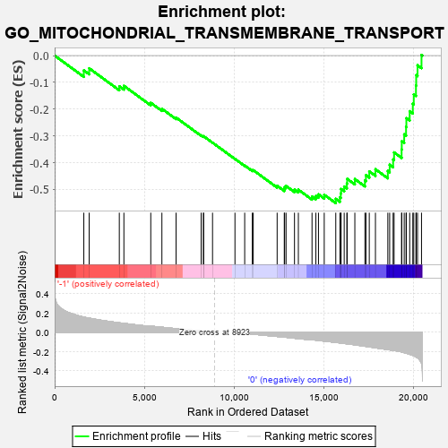
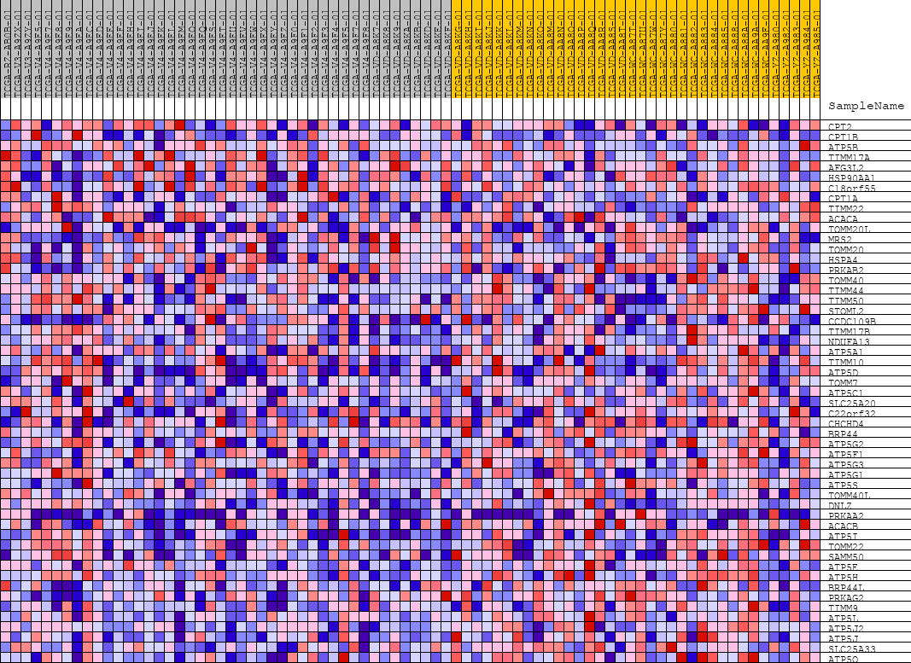
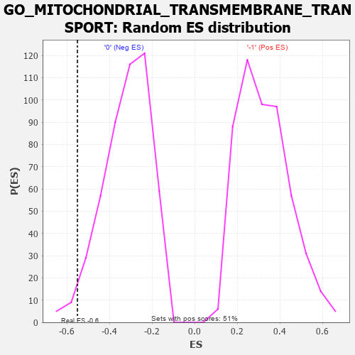

| | | Dataset | GSEAExpression.phenotype_uvm.cls#-1_versus_0 |
| Phenotype | phenotype_uvm.cls#-1_versus_0 |
| Upregulated in class | 0 |
| GeneSet | GO_MITOCHONDRIAL_TRANSMEMBRANE_TRANSPORT |
| Enrichment Score (ES) | -0.5513667 |
| Normalized Enrichment Score (NES) | -1.7079788 |
| Nominal p-value | 0.024691358 |
| FDR q-value | 1.0 |
| FWER p-Value | 0.959 |
Table: GSEA Results Summary

Fig 1: Enrichment plot: GO_MITOCHONDRIAL_TRANSMEMBRANE_TRANSPORT
Profile of the Running ES Score & Positions of GeneSet Members on the Rank Ordered List
| PROBE | DESCRIPTION
(from dataset) | GENE SYMBOL | GENE_TITLE | RANK IN GENE LIST | RANK METRIC SCORE | RUNNING ES | CORE ENRICHMENT | | 1 | CPT2 | na | | | 1627 | 0.158 | -0.0553 | No |
| 2 | CPT1B | na | | | 1926 | 0.146 | -0.0475 | No |
| 3 | ATP5B | na | | | 3607 | 0.098 | -0.1146 | No |
| 4 | TIMM17A | na | | | 3863 | 0.092 | -0.1130 | No |
| 5 | AFG3L2 | na | | | 5362 | 0.063 | -0.1765 | No |
| 6 | HSP90AA1 | na | | | 5983 | 0.052 | -0.1988 | No |
| 7 | C18orf55 | na | | | 6774 | 0.037 | -0.2316 | No |
| 8 | CPT1A | na | | | 8173 | 0.013 | -0.2980 | No |
| 9 | TIMM22 | na | | | 8301 | 0.011 | -0.3026 | No |
| 10 | ACACA | na | | | 8307 | 0.011 | -0.3012 | No |
| 11 | TOMM20L | na | | | 8808 | 0.002 | -0.3253 | No |
| 12 | MRS2 | na | | | 10059 | -0.002 | -0.3861 | No |
| 13 | TOMM20 | na | | | 10602 | -0.012 | -0.4108 | No |
| 14 | HSPA4 | na | | | 11026 | -0.019 | -0.4286 | No |
| 15 | PRKAB2 | na | | | 11079 | -0.020 | -0.4281 | No |
| 16 | TOMM40 | na | | | 12412 | -0.044 | -0.4865 | No |
| 17 | TIMM44 | na | | | 12810 | -0.051 | -0.4982 | No |
| 18 | TIMM50 | na | | | 12828 | -0.051 | -0.4912 | No |
| 19 | STOML2 | na | | | 12909 | -0.052 | -0.4872 | No |
| 20 | CCDC109B | na | | | 13380 | -0.062 | -0.5007 | No |
| 21 | TIMM17B | na | | | 13596 | -0.066 | -0.5011 | No |
| 22 | NDUFA13 | na | | | 14358 | -0.078 | -0.5264 | No |
| 23 | ATP5A1 | na | | | 14573 | -0.081 | -0.5244 | No |
| 24 | TIMM10 | na | | | 14717 | -0.085 | -0.5184 | No |
| 25 | ATP5D | na | | | 15039 | -0.092 | -0.5199 | No |
| 26 | TOMM7 | na | | | 15683 | -0.105 | -0.5353 | Yes |
| 27 | ATP5C1 | na | | | 15913 | -0.110 | -0.5295 | Yes |
| 28 | SLC25A20 | na | | | 15963 | -0.111 | -0.5149 | Yes |
| 29 | C22orf32 | na | | | 15979 | -0.112 | -0.4985 | Yes |
| 30 | CHCHD4 | na | | | 16153 | -0.116 | -0.4892 | Yes |
| 31 | BRP44 | na | | | 16301 | -0.120 | -0.4781 | Yes |
| 32 | ATP5G2 | na | | | 16320 | -0.120 | -0.4606 | Yes |
| 33 | ATP5F1 | na | | | 16747 | -0.130 | -0.4614 | Yes |
| 34 | ATP5G3 | na | | | 17309 | -0.145 | -0.4666 | Yes |
| 35 | ATP5G1 | na | | | 17366 | -0.147 | -0.4468 | Yes |
| 36 | ATP5S | na | | | 17552 | -0.151 | -0.4327 | Yes |
| 37 | TOMM40L | na | | | 17896 | -0.161 | -0.4247 | Yes |
| 38 | DNLZ | na | | | 18587 | -0.180 | -0.4309 | Yes |
| 39 | PRKAA2 | na | | | 18690 | -0.183 | -0.4079 | Yes |
| 40 | ACACB | na | | | 18882 | -0.188 | -0.3884 | Yes |
| 41 | ATP5I | na | | | 18935 | -0.190 | -0.3618 | Yes |
| 42 | TOMM22 | na | | | 19355 | -0.204 | -0.3511 | Yes |
| 43 | SAMM50 | na | | | 19365 | -0.204 | -0.3202 | Yes |
| 44 | ATP5E | na | | | 19500 | -0.212 | -0.2943 | Yes |
| 45 | ATP5H | na | | | 19604 | -0.216 | -0.2662 | Yes |
| 46 | BRP44L | na | | | 19621 | -0.217 | -0.2337 | Yes |
| 47 | PRKAG2 | na | | | 19807 | -0.228 | -0.2078 | Yes |
| 48 | TIMM9 | na | | | 19981 | -0.239 | -0.1797 | Yes |
| 49 | ATP5L | na | | | 20034 | -0.244 | -0.1449 | Yes |
| 50 | ATP5J2 | na | | | 20156 | -0.254 | -0.1119 | Yes |
| 51 | ATP5J | na | | | 20169 | -0.256 | -0.0733 | Yes |
| 52 | SLC25A33 | na | | | 20244 | -0.266 | -0.0362 | Yes |
| 53 | ATP5O | na | | | 20466 | -0.323 | 0.0025 | Yes |
Table: GSEA details [plain text format]

Fig 2: GO_MITOCHONDRIAL_TRANSMEMBRANE_TRANSPORT
Blue-Pink O' Gram in the Space of the Analyzed GeneSet

Fig 3: GO_MITOCHONDRIAL_TRANSMEMBRANE_TRANSPORT: Random ES distribution
Gene set null distribution of ES for GO_MITOCHONDRIAL_TRANSMEMBRANE_TRANSPORT